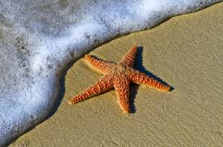

view this website in half screen mode.
Image by Unknown from Wikepedia Commons
Though their name might suggest it, Starfish are not fish at all! They are actually marine invertabraes. There are 2000 species of sea stars, and maybe more who have not been discovered.
Starfish are one of a kind creatures. Their arms hold small eyespots at the tips, which allow them to distinguish light form dark. However, they cannot detect details. Starfish with five arms are the most commonly recognized type, but some can have more. For example, the Crown of Thorns Starfish can have up to 21 arms! While on the topic of arms, did you know that starfish arms can actually regenerate? This is very useful when predators attack.
Additionally, starfish are missing many of the main componets that we and other animals possess. They have no brain, only a simple nervous system and sensory cells. These cells recieve stimuli from the body and send messages to the muscles. Stimuli are anything from touch, temperature, and chemicals in the water. Secondly, they hav eno blood. Instead, they run on a water-vascular system, which helps them breathe, move, and expel waste.
In terms of size, starfish are very diverse. They can range anywhere from the size of a fingernail to several feet in diameter! They can weigh up to 11 pounds, which is about the size of a newborn baby. They also have a lifespan of 10-35 years.
Image 1 of Crown of Thorns Starfish by Joi Ito on Flickr.
Image 2 of Miniature Starfish by unknown from Flickr.